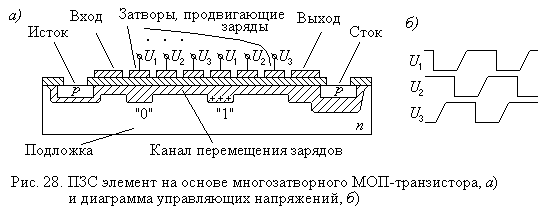

2.5. Другие типы полупроводниковых запоминающих устройств
Семейство полупроводниковых ЗУ не ограничивается рассмотренными в предыдущих параграфах разновидностями. Существуют различные ЗУ, либо представляющие собой определенные модификации описанных выше типов, целью которых является улучшение каких-либо характеристик, либо использующие иные технологические и физические принципы организации.
К модификациям типовых ЗУ можно отнести следующие разновидности:
- видео ОЗУ (Video RAM)
- оконное ОЗУ (Window RAM)
- синхронная графическая память (SGRAM)
- память с виртуальными каналами (Virtual Channel Memory - VCM) и др.
Видео ОЗУ, оконное ЗУ и синхронная графическая память – устройства, предназначенные для использования в видеоадаптерах.
Первые два из них представляют собой двухпортовую память. Один из портов является обычным интерфейсом динамической памяти, а другой – последовательным трактом считывания данных, используемым для регенерации изображения на экране монитора. Поскольку такая память реализуется на обычных динамических элементах, то наличие двух портов предполагает разделение доступа к матрице памяти со стороны портов, т.е. общая пропускная способность собственно памяти не увеличивается. Однако за счет использования буферных регистров портов можно добиться их одновременной работы. Window RAM обеспечивает более высокую производительность при работе с графикой, чем Video RAM, за счет структурных решений, а также так как имеет некоторые дополнительные аппаратные функции, ориентированные специально на задачи видеоадаптера.
Синхронная графическая память SGRAM представляет собой улучшенный вариант SDRAM, ориентированный на работу в видеоадаптерах, особенности которой проявляются при записи и чтении больших объемов информации. Как правило, эта информация пересылается большими блоками ячеек с последовательными адресами. Для оптимизации такого рода операций введены специальные режимы блочной записи – Block Write и побитовой записи – Write-per-Bit. Первый из них позволяет записать значение, предварительно занесенное в специальный регистр SGRAM (Color register - регистр цвета), в восемь ячеек одновременно. Второй режим (Write-per-Bit) также предназначен для заполнения ячеек определенными данными с возможностью маскирования (блокировки) отдельных ячеек.
Память с виртуальными каналами VCM, в отличие от перечисленных выше видов, предполагает усовершенствование не интерфейсов, а внутреннего доступа к матрице элементов памяти. В обычной памяти имеется один канал, по которому данные считываются из ядра и записываются в него. Фирма NEC предложила использовать несколько независимых каналов чтения/записи информации. Каждый из них имеет свои собственные буферные регистры для адреса строки, счетчики адресов пакетного режима и промежуточные регистры хранения информации, что позволяет считывать и записывать данные в разные области матрицы элементов памяти. При этом каждый канал может быть назначен независимому устройству, которое обращается к памяти, процессору, контроллеру ПДП или AGP-контроллеру. При обращении к памяти сразу нескольких устройств промежуточные данные временно хранятся в отдельных каналах и записываются в банки памяти по мере их освобождения от выполнения предыдущих операций. Такой подход позволяет увеличить производительность системы в среднем на 20%.
Известны и некоторые другие типы модификаций основных вариантов динамической памяти, например EDRAM (улучшенная динамическая память), MDRAM (многобанковая память), 3DRAM (“трехмерная”память) и др.
К запоминающим устройствам, использующим иные технологические
и/или физические принципы, относятся:
- ЗУ на приборах с зарядовой связью;
- ферроэлектрические ЗУ.
ЗУ на приборах с зарядовой связью (иначе, с переносом зарядов) ПЗС являются представителями класса ЗУ с циклическим (прямым) доступом. Эти ЗУ построены на принципе перемещения электрического заряда, для реализации которого используется МОП-транзистор, имеющий много затворов. Информация в таком транзисторе хранится в виде заряда (“1”) или его отсутствия (“0”) под затвором.
Подавая на соседние затворы сдвинутые по фазе потенциалы (обычно используется две или три серии сигналов), можно заставить заряды перемещаться в требуемом направлении от затвора к затвору, что показано на рис. 28. Разместив такие транзисторы и затворы на них соответствующим образом, можно построить логические аналоги сдвигающих регистров с циклическим сдвигом (или, что то же, аналоги дорожек диска).

Знакомые с устройством электродвигателей могут увидеть в схеме продвижения зарядов аналогию с трехфазными электродвигателями. Подобного рода схемы применялись и в другом классе ЗУ с циклическим доступом: ЗУ на цилиндрических магнитных доменах.
Для построения собственно ЗУ на основе ПЗС используется архитектура, представляющая собой, по существу, набор сдвигающих регистров и дешифраторов адреса – мультиплексоров, коммутирующих связи этих регистров с шинами данных.
Однако наибольший интерес в настоящем представляет не использование ПЗС в запоминающих устройствах, а возможность построения светочувствительных ПЗС и применение матриц таких приборов в цифровых фотоаппаратах и видеокамерах. В этих матрицах инжекция зарядов в проводящую область осуществляется под действием света.
В ферроэлектрических ЗУ элементы памяти подобны элементам памяти динамических ЗУ, но вместо обычных конденсаторов в них используются конденсаторы на ферроэлектриках, обладающие свойством сохранения остаточной поляризации. Характеристика состояния таких элементов имеет вид гистерезисной петли, подобной той, которую имели элементы в запоминающих устройствах на ферритовых сердечниках. Этот тип памяти рассматривается как один из кандидатов на место оперативной памяти, позволяющей также сохранять информацию при выключении питания.